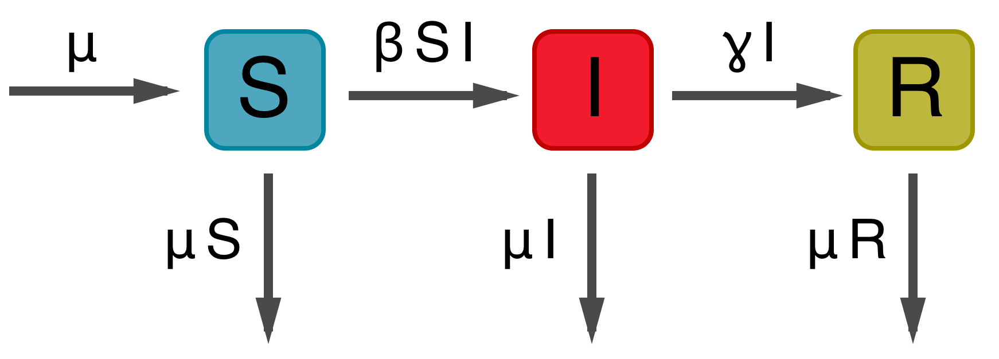

Multistrain models
In multistrain models, pathogens (or immune cells) interact via resource competition
Infection by strain $i$ creates immunity to strain $i$, but also to strain $j$
Consuming antigen $i$ by clone $x$ depletes antigen $i$ for consumption by clone $y$
Standard SIR model

$dS/dt = \mu - \beta S I - \mu S$
$dI/dt = \beta S I - \gamma I - \mu I$
$dR/dt = \gamma I - \mu R$
Model behavior

Solving for endemic equilibrium
Two-strain SIR model, independence between strains

Two-strain SIR model, cross-immunity mediated through transmission
Two-strain SIR model, cross-immunity mediated through susceptibility

Variety of ways to parameterize interactions

Kucharski et al 2015
Two-strain SIR model, cross-immunity through polarizing immunity